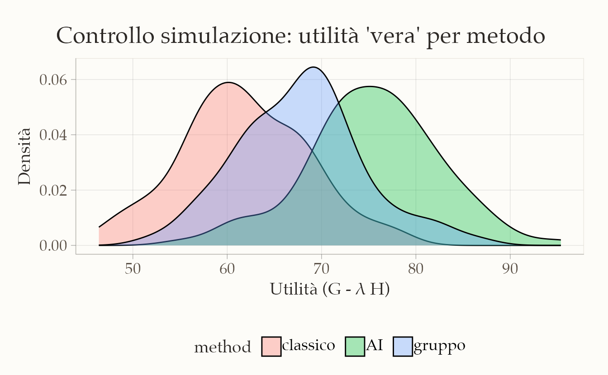
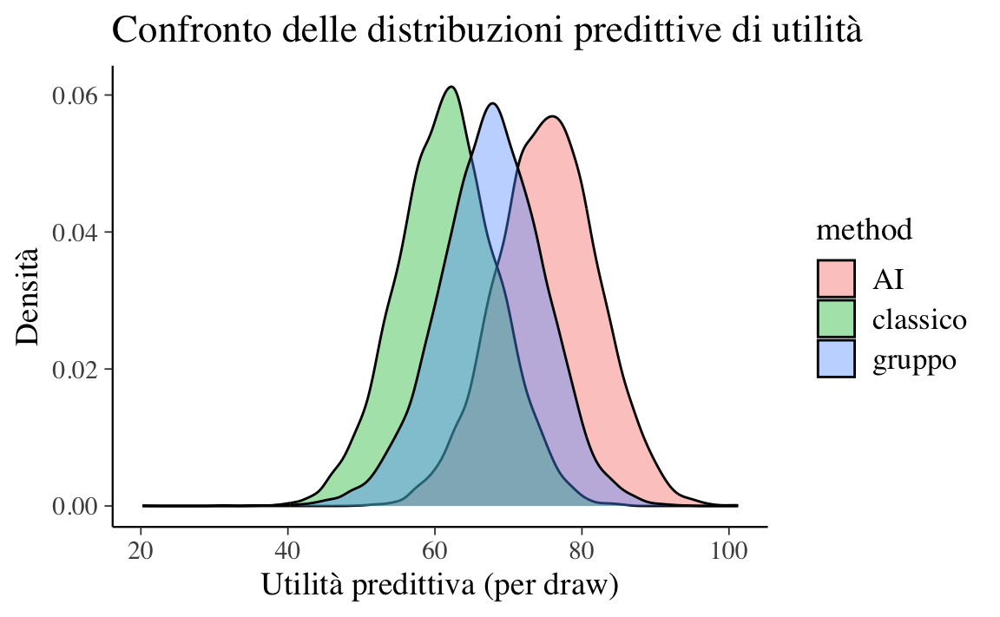
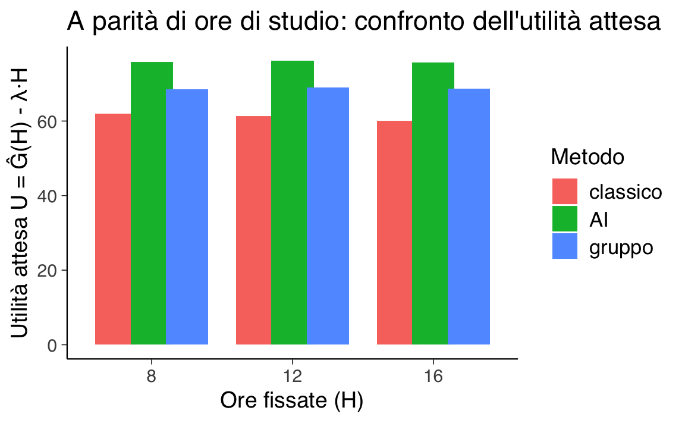
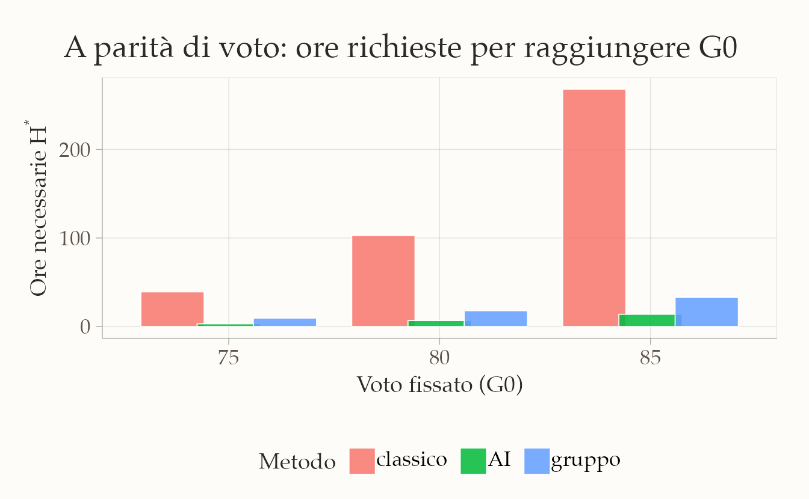

here::here("code", "_common.R") |>
source()
# Additional packages
if (!requireNamespace("pacman")) install.packages("pacman")
pacman::p_load(brms, posterior, loo, cmdstanr, stringr, tidyr)82 Analisi delle decisioni
Introduzione
L’analisi decisionale bayesiana è un modo per scegliere in condizioni di incertezza: si prevedono gli esiti possibili, si assegna a ciascuno un punteggio di utilità (quanto è desiderabile) o di perdita (quanto è costoso), e si sceglie l’alternativa che massimizza l’utilità attesa (equivalente a minimizzare la perdita attesa) rispetto alla distribuzione predittiva degli esiti.
In questo capitolo applicheremo il metodo al problema, concreto per gli studenti di psicologia, della scelta del metodo di studio. Metteremo a confronto tre opzioni, che differiscono per impegno richiesto ed efficacia prevista:
- Metodo classico: studio su testi + esercizi; nessun supporto interattivo.
- Metodo di gruppo: come il classico, più discussioni in piccoli gruppi per chiarire e consolidare.
- Metodo con AI tutor: studio su testi integrato con spiegazioni alternative, chat interattiva e esercizi aggiuntivi generati dal tutor.
Valuteremo ogni metodo in base a due esiti: voto d’esame \(g \in [0,100]\) e ore di studio \(h \ge 0\). Entrambi sono incerti e variano per differenze individuali (abilità, stile, motivazione) e per la naturale variabilità del processo di apprendimento.
Il quadro bayesiano ci consente di:
Stimare per ciascun metodo la distribuzione predittiva congiunta di \((g, h)\) a partire da dati (anche storici).
-
Combinare voto e tempo in un unico numero tramite una funzione di utilità, ad es.
\[ U(g,h;\lambda) = g - \lambda\,h, \]
dove \(\lambda \ge 0\) esprime quanto “pesa” un’ora in termini di punti di voto (il tasso di scambio tra voto e tempo).
Calcolare l’utilità attesa di ogni metodo integrando l’incertezza sui parametri e sugli esiti (via simulazione).
Selezionare il metodo con utilità attesa più alta e quantificare quanto è probabile che sia la scelta migliore.
82.1 Schema in quattro passi
Secondo l’impostazione proposta da Gelman et al. (2013), l’analisi decisionale bayesiana può essere strutturata in quattro fasi fondamentali. Di seguito, adattiamo tale schema al contesto in esame.
1. Definizione degli spazi delle decisioni e degli esiti.
Siano:
-
\(D\) l’insieme delle decisioni possibili, corrispondenti alla scelta tra tre metodi di studio:
\[ D = \{1, 2, 3\} \equiv \{\text{metodo classico}, \text{AI tutor}, \text{studio di gruppo}\}. \]
-
\(X\) l’insieme degli esiti, rappresentati da una coppia \((g, h)\), dove:
-
\(g\) è il voto d’esame (scalato tra 0 e 100 per convenienza);
-
\(h\) è il numero di ore di studio impiegate (\(h \geq 0\)).
Formalmente, lo spazio degli esiti è definito come \(X = \mathbb{R} \times \mathbb{R}_+\).
-
\(g\) è il voto d’esame (scalato tra 0 e 100 per convenienza);
2. Modellazione della distribuzione predittiva degli esiti.
La distribuzione degli esiti, condizionata alla decisione \(d\), viene modellata attraverso una specificazione congiunta delle componenti \(H\) (ore) e \(G\) (voto):
\[ \begin{aligned} H \mid d &\sim \mathrm{Lognormale}\big(\mu^{(h)}_{d}, \sigma^{(h)}_{d}\big), \\ G \mid H, d &\sim \mathrm{Normale}\!\Big(\alpha_{d} + \beta_{d}\,\log(1+H),\ \sigma_g\Big). \end{aligned} \]
Giustificazione delle scelte modellistiche:
- la distribuzione lognormale per \(H\) garantisce valori non negativi e cattura l’asimmetria tipicamente osservata nella distribuzione dei tempi di studio;
- la relazione tra \(G\) e \(H\) è modellata in modo da riflettere rendimenti marginali decrescenti: l’effetto delle ore di studio sul voto è positivo ma sublineare, come suggerito dal termine \(\log(1+H)\);
- i parametri \(\theta = (\mu^{(h)}_{1:3}, \sigma^{(h)}_{1:3}, \alpha_{1:3}, \beta_{1:3}, \sigma_g)\) vengono stimati a partire da dati storici (ad esempio, registri di 300 studenti dell’anno precedente, comprendenti metodo di studio adottato, ore dedicate e voto ottenuto).
3. Specificazione della funzione di utilità.
Vogliamo un numero unico che riassuma quanto è “buona” una certa combinazione di risultati: voto all’esame \(g\) (0–100) e ore di studio \(h\) (≥ 0). L’idea è premiare voti più alti e penalizzare più ore.
Una scelta semplice è:
\[ U(g,h;\lambda) \;=\; g \;-\; \lambda\,h, \qquad \lambda \ge 0. \]
- \(U\) è l’utilità: più è grande, meglio è.
- \(g\) è il voto.
- \(h\) sono le ore di studio.
- \(\lambda\) dice quanto “vale” un’ora di studio in punti di voto (cioè quanti punti sei disposto a “barattare” per risparmiare 1 ora).
Come leggere \(\lambda\):
- \(\lambda = 0\): il tempo non pesa. Conta solo alzare il voto.
- \(\lambda = 1\): 1 ora costa 1 punto. Risparmiare 3 ore vale come guadagnare 3 punti.
- \(\lambda = 0.5\): 2 ore costano 1 punto. Risparmiare 2 ore “vale” come +1 punto.
- \(\lambda\) grande (es. 2): il tempo è molto prezioso: 1 ora “vale” 2 punti.
In pratica, \(\lambda\) fissa il tasso di scambio tra voto e ore. È una manopola che l’utente (studente/docente) sceglie per dire quanto pesa la fatica/tempo rispetto al voto.
Esempi.
Con \(\lambda=0.5\) (2 ore ≈ 1 punto):
- Piano A: \(g=88\), \(h=28\) ⇒ \(U=88-0.5\cdot28=88-14=74\)
- Piano B: \(g=85\), \(h=20\) ⇒ \(U=85-0.5\cdot20=85-10=75\) → B è preferito (75 > 74): qualche punto in meno, ma molte ore risparmiate.
Se \(\lambda=0\) (il tempo non conta):
- A: \(U=88\) ; B: \(U=85\) → A vince (conta solo il voto).
4. Scelta della decisione ottimale.
La decisione bayesiana ottimale \(d^*\) è quella che massimizza l’utilità attesa predittiva:
\[ d^* = \arg\max_{k \in \{1,2,3\}} \mathbb{E}\!\left[U(G, H; \lambda) \mid d = k, \text{dati}\right]. \]
In un contesto bayesiano, tale valore atteso viene calcolato integrando sia sull’incertezza parametrica (distribuzione a posteriori dei parametri) sia sulla variabilità predittiva degli esiti. Operativamente, questa integrazione è implementata mediante simulazioni dalla distribuzione predittiva posteriore.
82.2 Esempio concreto: tre metodi di studio
Immaginiamo di avere dati dell’anno scorso (per ogni studente: metodo usato, ore totali, voto). Con Stan stimiamo \(p(H,G\mid d,\text{dati})\) come segue:
Modello generativo \(H\mid d \sim \text{Lognormal}(\mu^{(h)}_{d},\sigma^{(h)}_{d})\) \(G\mid H,d \sim \text{Normal}(\alpha_d + \beta_d \log(1+H),\sigma_g)\)
Utilità \(U(G,H;\lambda) = G - \lambda H\)
-
Calcolo dell’utilità attesa (schema Monte Carlo): per molti campioni \(\theta^{(s)}\sim p(\theta\mid \text{dati})\):
- generiamo \(H^{(s)}\sim p(H\mid d=k,\theta^{(s)})\)
- generiamo \(G^{(s)}\sim p(G\mid H^{(s)}, d=k, \theta^{(s)})\)
- calcoliamo \(U^{(s)}_k=U(G^{(s)},H^{(s)};\lambda)\) L’utilità attesa per il metodo \(k\) è la media \(\frac{1}{S}\sum_s U^{(s)}_k\). La decisione ottimale è il metodo con media più alta.
82.3 Nota pratica su Stan
- nel blocco
modelsi specificano le due componenti \(H\mid d\) e \(G\mid H,d\); - nel blocco
functionssi definisce \(U(g,h;\lambda)\); - nel blocco
generated quantitiessi generano, per ciascun metodo, una coppia \((\tilde H,\tilde G)\) e la corrispondente utilitàutil[k]. La media posteriore diutil[k]approssima l’utilità attesa del metodo \(k\). Confrontando queste medie si ottiene la decisione.
Nelle sezioni successive mostreremo il codice Stan minimale e uno script R che: i) stima il modello su dati simulati/reali, ii) calcola l’utilità attesa per i tre metodi al variare di \(\lambda\), iii) visualizza la distribuzione predittiva dell’utilità e la probabilità che ciascun metodo sia ottimale.
82.3.1 Simulazione dei dati
set.seed(123)
# --- 1) Setup ---
N <- 300
method_names <- c("classico","AI","gruppo")
d <- sample(1:3, N, replace = TRUE)
# --- 2) Parametri "di mondo" più distanzianti ma plausibili ---
# Ore (H) ~ Lognormal(mu_h, sigma_h)
# - classico: poche ore
# - AI: ore moderate
# - gruppo: molte ore, più variabile
mu_h_true <- log(c(8, 12, 16)) # mediane circa: 8, 12, 16 ore
sigma_h_true <- c(0.30, 0.40, 0.50)
# Voto G | H, d ~ Normal(alpha_d + beta_d * log1p(H), sigma_g)
# - AI: rendimento migliore (alpha e beta più alti)
# - gruppo: rendimento buono ma "caro" in ore
# - classico: rendimento più basso ma meno ore
alpha_true <- c(55, 64, 61)
beta_true <- c(5.5, 8.0, 6.5)
sigma_g_true <- 7
# Costo orario in punti-voto: leggermente più alto per aumentare la separazione
lambda <- 0.65
# --- 3) Simula ore e voti ---
h <- rlnorm(N, meanlog = mu_h_true[d], sdlog = sigma_h_true[d])
mu <- alpha_true[d] + beta_true[d] * log1p(h)
g <- rnorm(N, mu, sigma_g_true)
g <- pmin(pmax(g, 0), 100) # vincola in [0,100]# --- 4) Controllo rapido: utilità "vera" per vedere la separazione ---
u_true <- g - lambda * h
df_sim <- data.frame(method = factor(method_names[d], levels = method_names),
g = g, h = h, u = u_true)
# Densità utilità per metodo (controllo pre-Stan)
ggplot(df_sim, aes(x = u, fill = method)) +
geom_density(alpha = 0.35) +
labs(x = "Utilità (G - λ H)", y = "Densità",
title = "Controllo simulazione: utilità 'vera' per metodo") 
# --- 5) Prepara i dati per Stan ---
stan_data <- list(N = N, d = as.integer(d), h = h, g = g, lambda = lambda)
glimpse(stan_data)
#> List of 5
#> $ N : num 300
#> $ d : int [1:300] 3 3 3 2 3 2 2 2 3 1 ...
#> $ h : num [1:300] 41.4 22.8 23.1 20.7 12 ...
#> $ g : num [1:300] 83.9 85.5 84 93.5 70.5 ...
#> $ lambda: num 0.6582.3.2 Definizione del modello Stan
stancode <- "
functions {
real U(real g, real h, real lambda) {
return g - lambda * h;
}
}
data {
int<lower=0> N; // numero osservazioni
array[N] int<lower=1, upper=3> d; // decisione osservata: 1=classico, 2=AI, 3=gruppo
vector<lower=0>[N] h; // ore osservate
vector<lower=0, upper=100>[N] g; // voto osservato (clippato 0..100 a valle)
real<lower=0> lambda; // costo orario in punti-voto
}
parameters {
// ore ~ lognormal per metodo
vector[3] mu_h; // location log(ore) per metodo
vector<lower=0>[3] sigma_h; // scale log(ore) per metodo
// voto | (h, metodo) ~ Normal
vector[3] alpha; // intercetta per metodo
vector[3] beta; // pendenza su log1p(h) per metodo
real<lower=0> sigma_g; // sd residua del voto
}
model {
// Priors debolmente informativi
mu_h ~ normal(log(10), 1); // ore tipiche ~ e^N(log(10),1) ≈ 10 ore medie
sigma_h ~ normal(0, 0.5); // >0; log-sd moderata
alpha ~ normal(60, 20); // voto tipico ~60 (ampio)
beta ~ normal(5, 5); // più ore => voto più alto (a priori)
sigma_g ~ student_t(3, 0, 10); // rumore voto
// Likelihood
for (n in 1:N) {
h[n] ~ lognormal(mu_h[d[n]], sigma_h[d[n]]);
g[n] ~ normal(alpha[d[n]] + beta[d[n]] * log1p(h[n]), sigma_g);
}
}
generated quantities {
// utilità predittiva una-estrazione per ciascun metodo
array[3] real util;
array[3] real g_tilde;
array[3] real h_tilde;
for (k in 1:3) {
h_tilde[k] = lognormal_rng(mu_h[k], sigma_h[k]);
real mu_g = alpha[k] + beta[k] * log1p(h_tilde[k]);
g_tilde[k] = normal_rng(mu_g, sigma_g);
util[k] = U(g_tilde[k], h_tilde[k], lambda);
}
}
"Nel blocco functions di Stan, definiamo una funzione personalizzata U che quantifica l’utilità di un esito, combinando voto (g) e ore di studio (h) in un unico indice scalare:
real U(real g, real h, real lambda) {
return g - lambda * h;
}Parametri:
-
g: Voto d’esame (scala 0–100). Valori più alti indicano migliori risultati.
-
h: Ore di studio dedicate. Valori più alti implicano un maggior “costo” temporale.
-
lambda: Coefficiente che esprime il trade-off tra voto e tempo (es. λ = 0.5 ⇒ 2 ore “valgono” 1 punto di voto).
Interpretazione:
La funzione implementa il modello lineare \(U(g, h) = g - \lambda h\) dove g (voto) contribuisce positivamente all’utilità e h (ore) contribuiscono negativamente, ponderate da lambda.
Il blocco model lega i dati osservati ai parametri del modello:
for (n in 1:N) {
h[n] ~ lognormal(mu_h[d[n]], sigma_h[d[n]]); // Ore ~ Lognormale
g[n] ~ normal(alpha[d[n]] + beta[d[n]] * log1p(h[n]), sigma_g); // Voto ~ Normale
}Spiegazione:
- Ore di studio (
h):- Modellate come lognormali per garantire positività (
h > 0) e catturare asimmetria (coda lunga a destra).
- Parametri specifici per metodo
d[n]:-
mu_h[d[n]]: Media logaritmica.
-
sigma_h[d[n]]: Deviazione standard logaritmica.
-
- Modellate come lognormali per garantire positività (
- Voto (
g):- Modellato come normale con media dipendente dalle ore:
-
alpha[d[n]]: Voto base (intercetta).
-
beta[d[n]]: Effetto marginale delle ore (trasformate conlog1pper rendimenti decrescenti).
-
-
sigma_g: Variabilità residua (comune a tutti i metodi).
- Modellato come normale con media dipendente dalle ore:
Nota:
-
log1p(h[n])equivale a \(\log(1 + h)\) e garantisce un effetto positivo ma decrescente delle ore sul voto.
Il blocco generated quantities genera scenari futuri e calcola l’utilità per ciascun metodo:
for (k in 1:3) {
h_tilde[k] = lognormal_rng(mu_h[k], sigma_h[k]); // 1. Simula ore
real mu_g = alpha[k] + beta[k] * log1p(h_tilde[k]); // 2. Calcola voto atteso
g_tilde[k] = normal_rng(mu_g, sigma_g); // 3. Simula voto
util[k] = U(g_tilde[k], h_tilde[k], lambda); // 4. Calcola utilità
}Passaggi chiave:
- Simulazione delle ore (
h_tilde):- Campionamento da una lognormale con parametri stimati per il metodo
k.
- Campionamento da una lognormale con parametri stimati per il metodo
- Calcolo del voto atteso (
mu_g):- Usa la relazione stimata tra ore e voto (lineare in \(\log(1+h)\)).
- Usa la relazione stimata tra ore e voto (lineare in \(\log(1+h)\)).
- Simulazione del voto (
g_tilde):- Campionamento da una normale centrata su
mu_gcon variabilitàsigma_g.
- Campionamento da una normale centrata su
- Calcolo dell’utilità (
util[k]):- Applica la funzione
Uper valutare lo scenario simulato.
- Applica la funzione
Propagazione dell’incertezza:
- Ogni iterazione MCMC usa parametri diversi (riflettendo l’incertezza posteriore).
- La variabilità intrinseca di
h_tildeeg_tildecattura l’eterogeneità negli esiti.
I campioni generati in generated quantities permettono di:
- Stimare l’utilità attesa per metodo:
- Media posteriore di
util[k](es.mean(util[1])vsmean(util[2])).
- Media posteriore di
- Valutare la probabilità di optimalità:
- Frequenza con cui
util[k]è il massimo tra i 3 metodi.
- Frequenza con cui
- Analizzare distribuzioni predittive:
- Distribuzioni di
h_tilde,g_tilde, eutilper confrontare metodi.
- Distribuzioni di
82.3.3 Compilazione ed esecuzione del modello
Compiliamo il modello Stan:
stanmod <- cmdstan_model(
write_stan_file(stancode),
compile = TRUE
)Eseguiamo il campionamento MCMC:
fit <- stanmod$sample(
data = stan_data,
seed = 2025,
chains = 4, parallel_chains = 4,
iter_warmup = 1000, iter_sampling = 2000,
refresh = 200
)Riepilogo dei parametri principali:
print(fit$summary(c("mu_h","sigma_h","alpha","beta","sigma_g")))
#> # A tibble: 13 × 10
#> variable mean median sd mad q5 q95 rhat ess_bulk ess_tail
#> <chr> <dbl> <dbl> <dbl> <dbl> <dbl> <dbl> <dbl> <dbl> <dbl>
#> 1 mu_h[1] 2.06 2.06 0.03 0.03 2.01 2.11 1.00 8799.83 6022.47
#> 2 mu_h[2] 2.42 2.42 0.05 0.05 2.35 2.50 1.00 9771.43 5748.16
#> 3 mu_h[3] 2.74 2.74 0.05 0.05 2.67 2.82 1.00 8858.07 5913.96
#> 4 sigma_h[1] 0.31 0.31 0.02 0.02 0.28 0.34 1.00 9632.06 5815.07
#> 5 sigma_h[2] 0.47 0.47 0.03 0.03 0.41 0.52 1.00 8735.26 5292.25
#> 6 sigma_h[3] 0.46 0.46 0.04 0.03 0.41 0.52 1.00 10539.11 5879.37
#> 7 alpha[1] 55.72 55.68 4.63 4.64 48.19 63.27 1.00 5453.43 5227.55
#> 8 alpha[2] 64.05 64.01 3.81 3.84 57.69 70.27 1.00 5815.79 5159.80
#> 9 alpha[3] 54.79 54.80 4.38 4.36 47.52 62.10 1.00 5614.95 5345.32
#> 10 beta[1] 5.20 5.22 2.10 2.10 1.79 8.62 1.00 5438.11 5194.19
#> 11 beta[2] 7.76 7.76 1.49 1.50 5.31 10.24 1.00 5798.74 5291.50
#> 12 beta[3] 8.58 8.56 1.54 1.52 6.05 11.14 1.00 5508.91 4994.72
#> 13 sigma_g 6.73 6.72 0.28 0.28 6.28 7.20 1.00 8493.76 5783.98Estrai utilità generate:
Utilità attese e metodo migliore:
Probabilità che ciascun metodo sia ottimale (per draw):
best_idx <- max.col(Umat, ties.method = "first")
p_opt <- prop.table(table(factor(best_idx, levels = 1:3, labels = method_names)))
p_opt
#>
#> classico AI gruppo
#> 0.04938 0.74562 0.20500Riepilogo e grafico delle distribuzioni predittive di utilità:
util_long <- as.data.frame(Umat) |>
tibble::rownames_to_column(var = ".draw") |>
mutate(.draw = as.integer(.draw)) |>
pivot_longer(cols = all_of(method_names),
names_to = "method", values_to = "util")
util_sum <- util_long |>
group_by(method) |>
summarize(mean = mean(util),
sd = sd(util),
q05 = quantile(util, 0.05),
q50 = median(util),
q95 = quantile(util, 0.95),
.groups = "drop")
util_sum
#> # A tibble: 3 × 6
#> method mean sd q05 q50 q95
#> <chr> <dbl> <dbl> <dbl> <dbl> <dbl>
#> 1 AI 75.3 6.88 63.8 75.4 86.6
#> 2 classico 61.7 6.78 50.5 61.7 73.0
#> 3 gruppo 67.7 7.17 55.7 67.8 79.0ggplot(util_long, aes(x = util, fill = method)) +
geom_density(alpha = 0.4) +
labs(x = "Utilità predittiva (per draw)",
y = "Densità",
title = "Confronto delle distribuzioni predittive di utilità")
Nel grafico, l’asse x mostra l’utilità predittiva calcolata per ogni draw MCMC, cioè per ogni scenario simulato nel blocco generated quantities del modello.
Questi valori derivano dalla formula:
\[ U = G - \lambda H , \]
dove:
- \(G\) = voto simulato (0–100)
- \(H\) = ore di studio simulate (\(\ge 0\))
- \(\lambda\) = costo di un’ora di studio espresso in punti di voto
L’unità di misura dell’utilità è quindi punti di voto “netti”, già corretti per il “costo” del tempo di studio.
Interpretazione intuitiva:
- Utilità alta → voto alto con poche ore, o tempo poco penalizzato dal valore di \(\lambda\).
- Utilità bassa → voto basso e/o molte ore, fortemente penalizzate da \(\lambda\).
Ogni punto della distribuzione corrisponde a:
- Un set di parametri campionato dalla distribuzione a posteriori \((\mu_h, \sigma_h, \alpha, \beta, \sigma_g)\)
- Un paio di valori \((H, G)\) simulati da quel set di parametri
In questo modo la distribuzione riflette sia l’incertezza sui parametri sia la variabilità naturale degli esiti.
Cosa osservare nel grafico:
- Ampiezza: quanta incertezza/variabilità c’è nell’utilità per quel metodo
- Posizione media: utilità attesa → più a destra = metodo mediamente più vantaggioso
- Sovrapposizione: quanta incertezza in comune → più sovrapposizione = scelta meno netta
A parità di ore di studio.
Se confrontiamo i metodi mantenendo costanti le ore di studio (\(H\)), le differenze nell’utilità dipendono solo dal voto atteso (\(G\)) di ciascun metodo:
- A parità di tempo, un voto più alto → utilità maggiore
- Se due metodi danno lo stesso voto medio, ma uno richiede più ore, la penalizzazione \(-\lambda H\) riduce la sua utilità
Esempio numerico
Supponiamo \(\lambda = 0.5\) (1 punto di voto “vale” 2 ore di studio) e \(H = 12\) ore per tutti i metodi:
| Metodo | Voto atteso \(G\) | Ore \(H\) | Utilità \(U = G - \lambda H\) |
|---|---|---|---|
| Classico | 78 | 12 | \(78 - 0.5\cdot 12 = 72\) |
| AI | 82 | 12 | \(82 - 0.5\cdot 12 = 76\) |
| Gruppo | 79 | 12 | \(79 - 0.5\cdot 12 = 73\) |
Qui l’AI ottiene utilità maggiore solo grazie al voto più alto, a parità di ore. Se invece l’AI richiedesse più ore (es. 15), con lo stesso voto 82:
\[ U_{\text{AI}} = 82 - 0.5 \cdot 15 = 74.5 \]
resterebbe superiore al “classico” (72), ma con un margine ridotto.
Grafico a barre per ore fissate
Nel grafico seguente, fissiamo \(H\) a valori specifici (8, 12, 16 ore) e confrontiamo l’utilità attesa per ogni metodo. Questo evidenzia come, a ore costanti, la differenza di utilità dipenda solo dal voto atteso:
method_names <- c("classico","AI","gruppo")
lambda <- stan_data$lambda
sum_ab <- fit$summary(variables = c("alpha","beta")) %>% select(variable, mean)
alpha_hat <- sum_ab %>% filter(str_detect(variable, "^alpha\\[")) %>% arrange(variable) %>% pull(mean)
beta_hat <- sum_ab %>% filter(str_detect(variable, "^beta\\[")) %>% arrange(variable) %>% pull(mean)
fixed_H <- c(8, 12, 16)
df_H <- expand.grid(method = 1:3, H = fixed_H) %>%
as_tibble() %>%
mutate(
method_name = factor(method_names[method], levels = method_names),
G_hat = alpha_hat[method] + beta_hat[method] * log1p(H),
U_hat = G_hat - lambda * H
)
ggplot(df_H, aes(x = factor(H), y = U_hat, fill = method_name)) +
geom_col(position = position_dodge(width = 0.75)) +
labs(x = "Ore fissate (H)",
y = "Utilità attesa U = Ĝ(H) - λ·H",
fill = "Metodo",
title = "A parità di ore di studio: confronto dell'utilità attesa") 
A parità di voto.
Mostriamo, per alcuni target \(G_0\) (es. 75, 80, 85), quante ore servono a ciascun metodo e l’utilità corrispondente \(U = G_0 - \lambda H^\*\). Vince il metodo che richiede meno ore (penalità minore).
- A voto fissato, la differenza di utilità deriva solo dalle ore richieste: meno ore ⇒ penalità minore ⇒ utilità più alta.
- Il grafico rende visibile l’efficienza del metodo: per lo stesso traguardo \(G_0\), quale metodo “costa” meno tempo?
# Estrai tutti i draw di alpha[ ] e beta[ ]
pars <- c(paste0("alpha[",1:3,"]"), paste0("beta[",1:3,"]"))
draws <- fit$draws(variables = pars, format = "draws_matrix") |> as.matrix()
G_targets <- c(75, 80, 85)
method_names <- c("classico","AI","gruppo")
# Funzione: ore richieste H* per un draw e un metodo
Hreq_fun <- function(G0, alpha, beta){
pmax(exp((G0 - alpha)/beta) - 1, 0)
}
out <- lapply(G_targets, function(G0){
# per ogni draw, calcola H* dei 3 metodi
Hreq_mat <- sapply(1:3, function(k){
alpha_k <- draws[, paste0("alpha[",k,"]")]
beta_k <- draws[, paste0("beta[",k,"]")]
Hreq_fun(G0, alpha_k, beta_k)
})
colnames(Hreq_mat) <- method_names
as_tibble(Hreq_mat) |> mutate(G0 = G0, .draw = row_number())
}) |> bind_rows()
# Probabilità che AI richieda meno ore degli altri (per ogni G0)
prob_AI_best <- out |>
group_by(G0) |>
summarize(
p_AI_lt_classico = mean(AI < classico),
p_AI_lt_gruppo = mean(AI < gruppo),
p_AI_best = mean(AI == pmin(AI, classico, gruppo)),
.groups = "drop"
)
prob_AI_best
#> # A tibble: 3 × 4
#> G0 p_AI_lt_classico p_AI_lt_gruppo p_AI_best
#> <dbl> <dbl> <dbl> <dbl>
#> 1 75 0.993 0.999 0.992
#> 2 80 0.993 1 0.993
#> 3 85 0.993 1.000 0.993
# Riassunto delle H* (mediana e IQR)
Hreq_summary <- out |>
pivot_longer(all_of(method_names), names_to = "metodo", values_to = "Hreq") |>
group_by(G0, metodo) |>
summarize(mediana = median(Hreq),
q25 = quantile(Hreq, .25),
q75 = quantile(Hreq, .75),
.groups = "drop")
Hreq_summary
#> # A tibble: 9 × 5
#> G0 metodo mediana q25 q75
#> <dbl> <chr> <dbl> <dbl> <dbl>
#> 1 75 AI 3.10 2.43 3.69
#> 2 75 classico 39.2 28.0 68.6
#> 3 75 gruppo 9.54 8.68 10.4
#> 4 80 AI 6.81 6.11 7.41
#> 5 80 classico 103. 60.2 253.
#> 6 80 gruppo 17.9 16.8 19.1
#> 7 85 AI 13.8 13.0 14.9
#> 8 85 classico 268. 129. 923.
#> 9 85 gruppo 32.9 29.8 36.9
# Versione con mediana per draw (più stabile)
EU_G <- out |>
pivot_longer(all_of(method_names), names_to = "metodo", values_to = "Hreq") |>
mutate(U = G0 - stan_data$lambda * Hreq) |>
group_by(G0, metodo) |>
summarize(U_med = median(U), .groups = "drop")
EU_G
#> # A tibble: 9 × 3
#> G0 metodo U_med
#> <dbl> <chr> <dbl>
#> 1 75 AI 73.0
#> 2 75 classico 49.5
#> 3 75 gruppo 68.8
#> 4 80 AI 75.6
#> 5 80 classico 13.1
#> 6 80 gruppo 68.4
#> 7 85 AI 76.0
#> 8 85 classico -89.2
#> 9 85 gruppo 63.6method_names <- c("classico","AI","gruppo")
# Riepilogo H* (mediana e IQR) già calcolato in 'Hreq_summary'
# Se non esiste ancora, ricrealo da 'out':
Hreq_summary <- out |>
pivot_longer(all_of(method_names), names_to = "metodo", values_to = "Hreq") |>
mutate(metodo = factor(metodo, levels = method_names)) |>
group_by(G0, metodo) |>
summarize(mediana = median(Hreq),
q25 = quantile(Hreq, .25),
q75 = quantile(Hreq, .75),
.groups = "drop")
# (1) Barre: ore necessarie H* per raggiungere G0 (mediana + IQR)
ggplot(Hreq_summary, aes(x = factor(G0), y = mediana, fill = metodo)) +
geom_col(position = position_dodge(width = 0.8)) +
labs(x = "Voto fissato (G0)",
y = expression(paste("Ore necessarie ", H^"*")),
fill = "Metodo",
title = "A parità di voto: ore richieste per raggiungere G0")
- Le barre mostrano la mediana su tutti i draw MCMC (incertezza parametrica).
- A voto fissato \(G_0\), vince il metodo con H più bassa (meno ore) e quindi utilità residua più alta.
82.4 Limiti della funzione di utilità lineare e modelli avanzati
La funzione di utilità lineare
\[ U(g,h;\lambda) = g - \lambda h, \quad \lambda \geq 0 \]
rappresenta un modello di riferimento per la sua semplicità e trasparenza interpretativa (“1 ora di studio equivale a λ punti di voto”). Tuttavia, questa formulazione poggia su due ipotesi restrittive:
-
Linearità nel voto (g): il valore marginale di un punto è costante (es. 60→61 ≡ 90→91).
- Linearità nel tempo (h): il costo psicologico di un’ora aggiuntiva è indipendente dal carico di studio accumulato.
Queste assunzioni possono risultare inadatte in contesti realistici. Esploriamo quindi alcune possibili estensioni del modello.
82.4.1 Come rendere il modello più realistico
-
Utilità non lineare nel voto
- Rendimenti decrescenti: un aumento da 60 a 65 è più “prezioso” che da 90 a 95 → funzioni come log(g) o √g.
- Soglie: sotto un certo voto minimo il risultato è inaccettabile, anche se richiede poco studio.
-
Utilità non lineare nel tempo
- Fatica crescente: dopo molte ore, ogni ora extra “pesa” di più.
- Modelli con potenze (h², h¹·⁵) per catturare questo effetto.
-
Riferimenti e obiettivi personali
- Un voto sotto il proprio target pesa più di quanto un voto sopra dia soddisfazione (avversione alle perdite).
-
Rischio e incertezza
- Se i risultati sono incerti, non basta guardare la media: si può penalizzare la variabilità o ottimizzare scenari “pessimi” (es. percentile più basso atteso).
-
Preferenze diverse tra individui
- Studenti con lavori part-time o carichi diversi possono avere λ personali → modelli gerarchici permettono di stimare questa variabilità.
In sintesi,
- un ricercatore può iniziare a verificare il modello lineare per la sua chiarezza;
- poi verifica se i dati mostrano non linearità o effetti di rischio;
- aggiunge complessità solo se serve, per migliorare realismo e capacità predittiva.
Riflessioni conclusive
In questo capitolo abbiamo visto come l’analisi decisionale bayesiana permetta di integrare in un unico quadro:
- previsioni sugli esiti (distribuzione predittiva posteriore),
- preferenze esplicite (funzione di utilità),
- criteri di scelta (massimizzazione dell’utilità attesa).
Partendo da un modello semplice, con utilità lineare nel voto e nel tempo, abbiamo compreso come questa formulazione sia utile per introdurre i concetti fondamentali:
- tradurre in numeri la desiderabilità di un esito,
- calcolare e confrontare utilità attese,
- tenere conto dell’incertezza nelle previsioni.
Abbiamo poi discusso estensioni più realistiche, che possono catturare aspetti psicologici ed empirici complessi: rendimenti decrescenti, costi crescenti nel tempo, obiettivi personali, avversione al rischio e differenze individuali nei parametri.
Dal punto di vista pratico, il flusso di lavoro suggerito è:
- Iniziare semplice: un modello lineare è trasparente e facile da comunicare.
- Verificare le assunzioni sui dati: se emergono non linearità o effetti di rischio, valutare modelli più ricchi.
- Aggiungere complessità solo se necessaria, bilanciando realismo e interpretabilità.
Il vantaggio dell’approccio bayesiano è la capacità di propagare l’incertezza — sia sui parametri sia sugli esiti — fino alla decisione finale. Ciò consente di quantificare non solo quale opzione è in media la migliore, ma anche quanto siamo sicuri di questa scelta.
In sintesi, l’analisi decisionale bayesiana non è solo uno strumento per “fare la scelta giusta”, ma un metodo per rendere esplicito, trasparente e verificabile il processo con cui valutiamo e confrontiamo le alternative in condizioni di incertezza.
Informazioni sull’ambiente di sviluppo
sessionInfo()
#> R version 4.5.1 (2025-06-13)
#> Platform: aarch64-apple-darwin20
#> Running under: macOS Sequoia 15.6
#>
#> Matrix products: default
#> BLAS: /Library/Frameworks/R.framework/Versions/4.5-arm64/Resources/lib/libRblas.0.dylib
#> LAPACK: /Library/Frameworks/R.framework/Versions/4.5-arm64/Resources/lib/libRlapack.dylib; LAPACK version 3.12.1
#>
#> locale:
#> [1] C/UTF-8/C/C/C/C
#>
#> time zone: Europe/Zagreb
#> tzcode source: internal
#>
#> attached base packages:
#> [1] stats graphics grDevices utils datasets methods base
#>
#> other attached packages:
#> [1] stringr_1.5.1 cmdstanr_0.9.0 pillar_1.11.0
#> [4] tinytable_0.11.0 patchwork_1.3.1 ggdist_3.3.3
#> [7] tidybayes_3.0.7 bayesplot_1.13.0 ggplot2_3.5.2
#> [10] reliabilitydiag_0.2.1 priorsense_1.1.0 posterior_1.6.1
#> [13] loo_2.8.0 rstan_2.32.7 StanHeaders_2.32.10
#> [16] brms_2.22.0 Rcpp_1.1.0 conflicted_1.2.0
#> [19] janitor_2.2.1 matrixStats_1.5.0 modelr_0.1.11
#> [22] tibble_3.3.0 dplyr_1.1.4 tidyr_1.3.1
#> [25] rio_1.2.3 here_1.0.1
#>
#> loaded via a namespace (and not attached):
#> [1] svUnit_1.0.6 tidyselect_1.2.1 farver_2.1.2
#> [4] fastmap_1.2.0 TH.data_1.1-3 tensorA_0.36.2.1
#> [7] pacman_0.5.1 digest_0.6.37 estimability_1.5.1
#> [10] timechange_0.3.0 lifecycle_1.0.4 processx_3.8.6
#> [13] survival_3.8-3 magrittr_2.0.3 compiler_4.5.1
#> [16] rlang_1.1.6 tools_4.5.1 utf8_1.2.6
#> [19] yaml_2.3.10 data.table_1.17.8 knitr_1.50
#> [22] labeling_0.4.3 bridgesampling_1.1-2 htmlwidgets_1.6.4
#> [25] pkgbuild_1.4.8 curl_6.4.0 RColorBrewer_1.1-3
#> [28] abind_1.4-8 multcomp_1.4-28 withr_3.0.2
#> [31] purrr_1.1.0 grid_4.5.1 stats4_4.5.1
#> [34] xtable_1.8-4 colorspace_2.1-1 inline_0.3.21
#> [37] emmeans_1.11.2 scales_1.4.0 MASS_7.3-65
#> [40] cli_3.6.5 mvtnorm_1.3-3 rmarkdown_2.29
#> [43] generics_0.1.4 RcppParallel_5.1.10 cachem_1.1.0
#> [46] splines_4.5.1 parallel_4.5.1 vctrs_0.6.5
#> [49] V8_6.0.5 Matrix_1.7-3 sandwich_3.1-1
#> [52] jsonlite_2.0.0 arrayhelpers_1.1-0 glue_1.8.0
#> [55] ps_1.9.1 codetools_0.2-20 distributional_0.5.0
#> [58] lubridate_1.9.4 stringi_1.8.7 gtable_0.3.6
#> [61] QuickJSR_1.8.0 htmltools_0.5.8.1 Brobdingnag_1.2-9
#> [64] R6_2.6.1 rprojroot_2.1.0 evaluate_1.0.4
#> [67] lattice_0.22-7 backports_1.5.0 memoise_2.0.1
#> [70] broom_1.0.9 snakecase_0.11.1 rstantools_2.4.0
#> [73] coda_0.19-4.1 gridExtra_2.3 nlme_3.1-168
#> [76] checkmate_2.3.2 xfun_0.52 zoo_1.8-14
#> [79] pkgconfig_2.0.3Bibliografia
Gelman, A., Carlin, J. B., Stern, H. S., Dunson, D. B., Vehtari, A., & Rubin, D. B. (2013). Bayesian Data Analysis (3rd ed.). Chapman; Hall/CRC.
McElreath, R. (2020). Statistical rethinking: A Bayesian course with examples in R and Stan (2nd Edition). CRC Press.